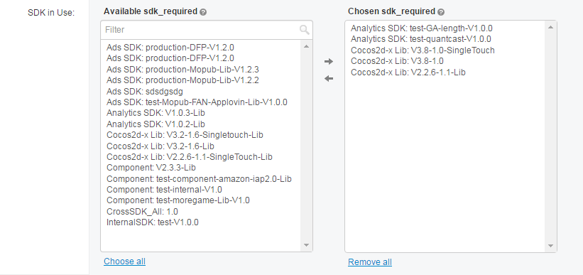

自我评价¶
传统学科人员，具备系统化抽象与建模能力，但是缺乏计算机知识，难以应用。
经过学习数学与物理过程训练，会大量提升人的抽象和建模能力。
优秀的开发人员，各有各的优点。能够融会贯通其他学科，必然思维广阔，能够促进对业务的理解和算法的合理使用，是开发的灵魂。拥有强大综合能力，开发者的专业知识没有上限。
编程细节冗杂，耗费程序员大量精力，程序员往往并不具备丰富的数学物理知识，遇事思维比较局促，往往是富含逻辑，但是抽象度不够。经过与同事的对比，我觉得我比他们具备更强大的抽象能力，思维更加的开阔。
- 学习了数学系与物理系的大量知识 ，使我具备强大的抽象与学习能力。
- 常年接触数据处理，能够快速理解各种数值算法结构。
- 学习能力强，所有编程知识均为自学，而且敢于 打破常规，优化组合，可见一斑。在互联网行业，这点尤其重要。
下面的不要¶
我不是计算机科班出身，IT从业经验不长，再加上年龄偏大，片面的简历，使得我丧失了很多机会。 所以在这里我借助这篇文档发出声音，我想要争取一下面试机会。您给我一个机会，我会给你一些惊喜。
目前，我在一家游戏公司从事web管理后台开发。经过小半辈子的试错以及一年的IT工作经历，我发觉自己的确喜欢也适合与计算机打交道，所以决定要在IT行业一直走下去。我想寻找一份更加能提升自己的工作，找到志同道合的朋友。
我是一名工科生，同时我也是一个目标性很强的人。我不太会在乎我拥有什么，我只在乎我想要什么。当我认为传统行业不能满足我的创造欲，不能给我成就感时，我敢于放弃硕士学位，重新选择行业。
读书期间，经常接触计算机，我暗下决心，要把自己的事业建立在计算机之上。我最初投入所有经历到CAE中，（CAE就是利用计算机来计算机械结构的力学，振动等问题。）为此，我读研究生，还研读了数学系和力学系的教材。但是我发觉传统行业创新脚步太慢，国内企业观念，技术都很难支撑人才的成长，个人难有作为。
重新定位和做职业规划，我觉得自己的编程基础还不错，而且算法思维能力很强，进入IT行业应该是可行的。经过一年的全职IT工作，我觉得自己的选择是正确的，面对工作，我非常快乐。这个行业充满了竞争，充满了希望了，有足够的空间让我飞翔，我想我会在这条路上一直走下去。
一些对比¶
- 普通程序员：
- 理论更多，扩展更强
- 同龄程序员:
- 知识更新，好奇心更强。
- 知识结构
- 程序员是一个经常用脑的群体。但是往往知识结构单一，造成感觉空虚。
- 长期使用python，对python常用知识非常熟悉。对Django的常用组件非常熟悉，对admin模块比较熟悉。
- 长期使用angular，Vuejs框架。对面向数据编程理解深刻。经常使用webpack等工具，对前端模块化有较为深刻的认知。
- 融合前后端知识（1,2点），擅长制作web管理系统，app管理后台等。不仅如此，经常长期摸索，构建了高效开发与灵活的自有代码库。
- 有多年c++/qt桌面开发经验，对c++/qt有知识足够的认知。使得我对python底层原理更加的清楚。
有本之木¶
编程细节冗杂，耗费程序员大量精力，程序员往往并不具备丰富的数学物理知识，只能是无本之木，难以扩展自己的思维。
- 学习了数学系与物理系的大量知识，使我具备强大的抽象与学习能力。
- 常年接触数据处理，能够快速理解各种数值算法结构。
- 年龄大，但是知识体系新。所有编程知识均为自学，而且敢于打破常规，优化组合，可见一斑。在互联网行业，这点尤其重要。
一些对比¶
- 知识结构
- 程序员是一个经常用脑的群体。但是往往知识结构单一，造成感觉空虚。
自己的进步¶
- 学会在linux部署服务器的操作，包括nginx，uwsgi等等
- 将angularjs应用到了实践中，初步尝到了新技术带来的甜头，加强了我学习先进前端技术的决心。
- 熟悉了微信公众号的各种api及原理。
- 解决mysql5.5以下版本不能存储某些特殊的utf8字符，以及如何解决它们。
- 弄懂了auth2.0的原理。
- 接触到服务器多个python应用进程数据同步的问题，了解了Memcached。
完成过程¶
在公司渡过煎熬的三个月后，终于迎来了完全属于自己的第一个项目。年会需求被分割为两个子项目，一个是抽奖，一个是微信互动。一个拥有5年经验的python leader选择了抽奖子项目。我的直接领导可能觉得这种公司内部的临时项目不太重要，就算搞砸了也影响不大。所以我这个老菜鸟就被指派了微信互动子项目。
项目的时间是一个月，我花费了大概一个星期，把微信的原理搞清楚，包括可恶的用户昵称特殊字符等等。由于当时我正在学习angularjs，正好让我有机会用在这个项目里面。有了angularjs的帮助，使的我的前端页面功能齐全，代码干净。
结果我圆满的完成了任务。而抽奖项目出了大问题，当时老板在台上是相当的尴尬。而这个事情也成了导火索，直接造成python leader的辞职。年会系统尽管是内部的临时系统，但是复杂度不低，而且直接面向老板和几百人，完全没有回旋余地，现在想来还是有点后怕。
注释
| [1] | 当前公司主要面向国外用户，各位同事前辈对国外生态比较熟悉，例如google api等，但对国内生态并不熟悉。 |
考勤¶
我的进步¶
- 大量的使用angularjs，熟悉了angularjs指令编译的过程。并且利用angularjs实现了在浏览器端，表格排序，筛选，分页，ajax上传文件等等功能。
- 尝试到了前端模块化的威力，为以后在这方面深入下去奠定了信心。
- 独立在linux服务器部署应用。
- 利用angularjs与django合作，做到了完全的前后端分离，也就是前端页面可以以虚拟数据单独运行，前端人员不必搭建django系统，双击html文件即可。开发调试前端会非常方便。这一条是python leader让我去探索的，尽管成功了，但是缺乏django template的支撑，使得前端源代码非常冗余。所以除非前端要求，最好还是不采用这种方式。
- angularjs在移动端渲染比较缓慢，在以后的项目中，我会更多的考虑移动端的特殊性。
完成过程¶
这个是项目是HR提出的。需求提出很久了，没人做。一来是没有人有微信公众号开发经验，二来是人手不够。在经历了年会系统后，我多多少少积累了一些信任，所以python leader把这个项目分配给了我。
项目的预计时间是一个月。由我独立完成，当然，前端妹子帮着写css。python leader要求不用django的admin系统，完全自定义界面和逻辑。当时我还没有制作web管理系统的经验。对于我来说，工作量非常大。为了不辜负同事的信任，我经常在家加班到两点。
PTS¶
我所接受的任务包括对系统不人性化的一些地方进行调整，很多问题由来已久，要解决都需要开动脑筋。下面举一个例子。
如截图，在游戏app操作页面创建新版本时，需要选择使用的SDK。由于当前游戏版本尚不存在，所以admin后台不能对备选项进行过滤和排序。由于在多选框中的SDK众多,安卓和苹果的SDK混杂在一起，而且没有排序，开发人员每次选择时都非常痛苦，抱怨声很大。领导表示，如果再找不到方法，可能会对与SDK相关的数据库动大手术来解决该问题。都知道调整数据库结构非常麻烦，可能需要耗费一两个月的时间。结果我写了一个js脚本，不断的轮询，对多选框的选项进行排序和过滤。尽管不是那么完美，有闪烁问题，但是非常实用，现在再没有开发人员抱怨了。
自己的进步¶
这个页面比。
该系统是一个对公司游戏app开发进行管理的系统。在我接收以前，已经是比较完善的了。我接收后，进行了信息聚合，用户体验等方面的优化。 因为这个系统是公司的主要系统。 这个系统的改造，难点是在比较复杂的前端页面。现在我们小组只有一个前端妹子，而且妹子不擅长写js逻辑。其他后端人员的前端js逻辑也不怎么样。所以一直以来，这个系统的用户体验都不好。一般都是千篇一律的列表，表单样式。
在这两个页面中，我再一次使用了angularjs。相比较jquery来说，效率提高了很多。但是要求后来接收的人员具备angularjs的知识。
下面是app看板页面，主页是由以前的经理人设计，前端写的样式，后端逻辑与前端逻辑都是我来写。 这个项目开始时间大概是今年3月份左右。
下面是该系统主页截图，也是由我编写后端与前端逻辑。 这个项目开始时间大概是4月份左右。
完成过程¶
这个项目开始时间大概是4月份左右。
APG 自己的进步 =========== 1. 实践了supervisor进程管理工具。 2. 将celery的定时任务和异步任务功能应用到静态网站的生成和自动部署上。 3. 使用了新的前端框架Vuejs，封装了html的各种input元素，能够对应django model自动生成表单。 4. 获得前端对ajax消息处理的一些宝贵经验。
完成过程¶
制作这个系统的时间大概是在2016年6月份。为了和其他系统保持外观一致，总体框架仍然采用了django-suit。但是主要页面完全是前后端分离的。在PTS中，我大量使用了angularjs，经过对比，我发觉Vuejs比angularjs更加的优秀。所以在APG中，我改为使用Vuejs。
由于时间相对比较充裕，所以进行了较多的重构。将Vuejs与django结合得比较好。